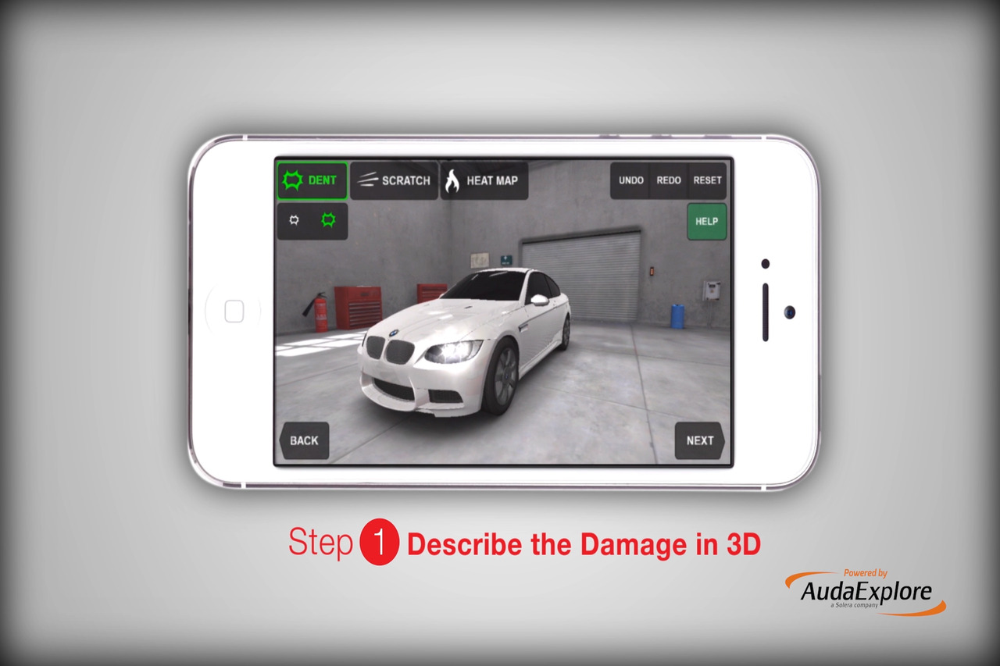
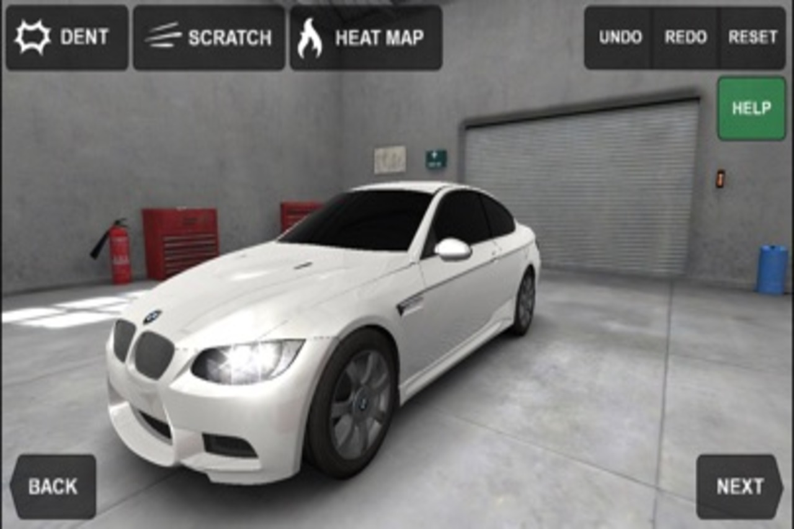

<div id="portfolio-page" class="portfolio-page-content">
    <div class="portfolio-page-wrapper">
        <div class="portfolio-page-nav">
            <div class="nav-item portfolio-page-prev-next">
                <a class="ajax-page-load" href="portfolio-project-1.html"><i class="lnr lnr-chevron-left"></i></a>
                <a class="ajax-page-load" href="portfolio-project-3.html"><i class="lnr lnr-chevron-right"></i></a>
            </div>
            <div class="nav-item portfolio-page-close-button">
                <a id="portfolio-page-close-button" href="#"><i class="lnr lnr-cross"></i></a>
            </div>
        </div>

        <div class="portfolio-page-title">
            <h1>State Farm Pocket Estimate Mobile App</h1>
        </div>

        <div class="row">
            <div class="col-sm-8 col-md-8 portfolio-block">
                <div class="owl-carousel portfolio-page-carousel">
                    <div class="item">
                        
                    </div>
                    <div class="item">
                        
                    </div>
                </div>
                
               <div class="portfolio-page-video embed-responsive embed-responsive-16by9">
                  <iframe class="embed-responsive-item" src="https://player.vimeo.com/video/814093882?h=e234ccf7df&amp;badge=0&amp;autopause=0&amp;player_id=0&amp;app_id=58479"></iframe>
                </div>
                
                <div class="row"> 
                <p class="text-justify">
                    <br>
                        From 2015 to 2016, I worked as a software developer at AudaExplore, a Solera Company. AudaExplore is a leading provider of
                        software for the automotive and claims processing industry. I worked on the mobile team, which was tasked with creating Android and iOS applications for
                        car insurance companies. Notable among them, aside from the Liberty Mutual Express Estimate app, was the State Farm Pocket Estimate app.                    
                    </p>
                    <p>
                       The Pocket Estimate app was similar to the Express Estimate app in that it allowed clients to file claims, 
                        manage existing claims, upload photos/documents, request roadside assistance, connect with an agent, and access ID cards.
                    </p>
                    <p>
                        During my first two weeks at AudaExplore, I was tasked with performing quality assurance testing not only on the Express Estimate app, but the Pocket Estimate app. 
                        I also worked on this app's 3D damage viewer, which was very similar to that of the Express Estimate app. It was also coded in WebGL and three.js and simulated dents and scratches on the vehicle, as well as their depth using a heatmap. 
                        On this 3D damage viewer, I was tasked with adding functionality to the heatmap and adding/removing dents. Also, I contributed to the design and implementation of the user interface.
                        
                    </p>
                </div>

                <script type="text/javascript">
                    jQuery(document).ready(function($){
                        $('.portfolio-page-carousel').imagesLoaded(function(){
                            $('.portfolio-page-carousel').owlCarousel({
                                smartSpeed:1200,
                                items: 1,
                                loop: true,
                                dots: true,
                                nav: true,
                                navText: false,
                                margin: 10,
                                autoHeight:true
                            });
                        });
                    });
                </script>
            </div>

            <div class="col-sm-4 col-md-4 portfolio-block">
                <!-- Project Description -->
                <div class="project-description">
                    <div class="block-title">
                        <h3>Description</h3>
                    </div>
                    <ul class="project-general-info">
                        <li><p><i class="lnr lnr-user"></i> Marisol Figueroa</p></li>
                        <li><p><i class="lnr lnr-link"></i> <a href="https://www.statefarm.com/customer-care/download-mobile-apps/state-farm-mobile-app" target="_blank">State Farm Mobile Apps</a></p></li>
                        <li><p><i class="lnr lnr-calendar-full"></i> June 2015-August 2016</p></li>
                    </ul>


                    <!-- Technology -->
                    <div class="tags-block">
                        <div class="block-title">
                            <h3>Technology</h3>
                        </div>
                        <ul class="tags">
                            <li><a>HTML</a></li>
                            <li><a>CSS</a></li>
                            <li><a>Bootstrap</a></li>
                            <li><a>WebGL</a></li>
                            <li><a>three.js</a></li>
                        </ul>
                    </div>
                    <!-- /Technology -->

                    <!-- Share Buttons -->
                    <!--
                    <div class="share-buttons">
                        <div class="block-title">
                            <h3>Share</h3>
                        </div>
                        <div class="share-buttons-block">
                            <a href="#" target="_blank" class="btn"><i class="fab fa-facebook-f"></i> </a>
                            <a href="#" target="_blank" class="btn"><i class="fab fa-twitter"></i> </a>
                            <a href="#" target="_blank" class="btn"><i class="fab fa-dribbble"></i> </a>
                        </div>
                    </div>
                    -->
                    <!-- /Share Buttons -->
                </div>
                <!-- Project Description -->
            </div>
        </div>
    </div>
</div>
